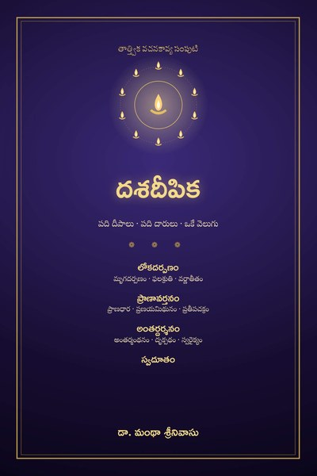
దశదీపిక
పది దీపాలు · పది దారులు · ఒకే వెలుగు
Google PlayLibraryదశదీపిక: పది దీపాలు — పది వచనకావ్యాలు. లోకపు చీకట్ల నుండి ఆత్మ వెలుగు వరకు దారి చూపే దీపమాల
ఇది. డా. మంథా శ్రీనివాసు రచించిన పది తెలుగు వచనకావ్యాలను నాలుగు ఖండాలుగా, ఒకే యాత్రగా అమర్చిన సమగ్ర సంపుటి.
ప్రథమ ఖండం
లోకదర్పణం సమాజానికి అద్దం పడుతుంది.
*మృగదర్పణంలో పట్టణం నుండి ఎగిరొచ్చిన పగిలిన అద్దం పది వనాల గుండా ప్రయాణిస్తూ రాజకీయం, విద్య, వైద్యం, న్యాయం, విపణిలోని వికృతులను నవ్వుతో బయటపెడుతుంది.
*ఫలశ్రుతిలో ఒక తాతయ్య తోటలోని పదహారు పండ్లు విరిగిన కుటుంబపు మనవడికి జీవనపాఠాలవుతాయి.
*వర్ణాతీతంలో చూపు లేని చెల్లికి అన్న రంగులు చెబుతాడు — చివరికి ఆమే అతనికి రంగులకు అతీతమైన వెలుగు చూపిస్తుంది.
ద్వితీయ ఖండం
ప్రాణావర్తనం ఒక జీవితాన్ని గర్భం నుండి చితి దాకా, చితి నుండి మళ్ళీ జననం దాకా తిప్పి చూపుతుంది.
*ప్రాణధారలో ఒక పాలచుక్క ధారయై జీవనచక్రం గుండా ప్రవహిస్తుంది.
*ప్రణయమిథునంలో ఒకే రాత్రి వెలిగిన రెండు దీపాలు ఊయల నుండి జ్యోతిర్లయం వరకు ప్రేమించుకుంటాయి.
*ప్రతీపచక్రంలో విస్మృతిలోకి జారుతున్న ఒక వృద్ధుని మనసు రాశిచక్రంలో వెనక్కి తిరిగి, పుత్రిక ఒడిలో మళ్ళీ శిశువవుతుంది.
తృతీయ ఖండం
అంతర్దర్శనం లోపలికి తిరుగుతుంది.
*అంతర్మంథనంలో ముప్పై ఆరు దీర్ఘ కవితలు అంతఃకరణం నుండి పరమార్థం వరకు మనసును మథిస్తాయి.
*దృక్పథంలో కళ్ళు లేని ఆమె, కాళ్ళు లేని అతడు ఒకరినొకరు మోసుకుంటూ దర్శనాల గుండా శిఖరం చేరతారు.
*స్వరైక్యంలో సప్తద్వీపాలు, సప్తసముద్రాలు, సప్తస్వరాలు ఒక మనిషి లోపలి భూగోళమై ఒకే శ్రుతిలో కలుస్తాయి.
పరిసమాప్తిగా
స్వదూతం — అన్వేషకుడూ, దూతా, ప్రశ్నా, జవాబూ తానే అయిన దశసర్గల సందేశకావ్యం.
మనోవిజ్ఞానం, భారతీయ దర్శనాలు, సామాజిక విలువలు — సిద్ధాంతాల పేర్లతో కాదు, దృశ్యాలుగా, పాత్రలుగా, అనుభూతులుగా. ప్రతి కావ్యం స్వతంత్రమే; వరుసగా చదివితే బయటి లోకపు గాయాల నుండి లోపలి ప్రశాంతి వరకు సాగే ఒక పూర్ణప్రయాణం.
वचनकाव्यानि · दशदीपिका · तेलुगु · Vacana-kāvyas · Daśadīpikā · Telugu
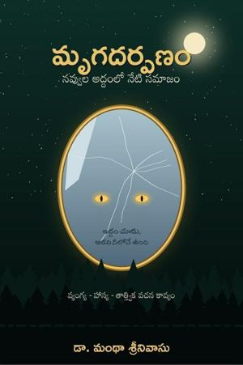
మృగదర్పణంTelugu
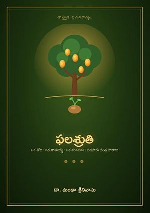
ఫలశ్రుతిTelugu
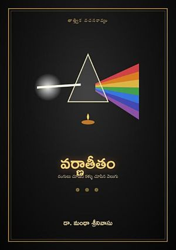
వర్ణాతీతంTeluguప్రాణధార
Telugu
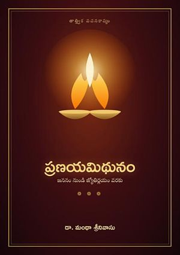
ప్రణయమిథునంTelugu
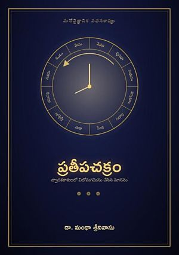
ప్రతీపచక్రంTelugu
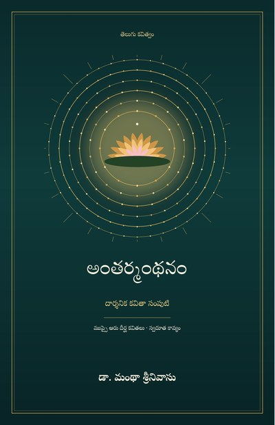
అంతర్మంథనంTelugu
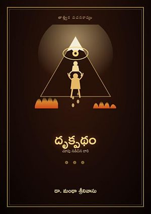
దృక్పథంTelugu
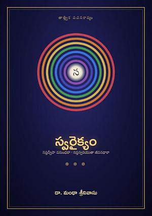
స్వరైక్యంTelugu
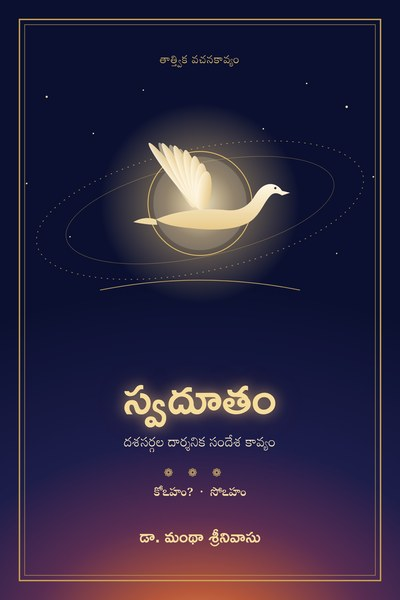
స్వదూతంTelugu
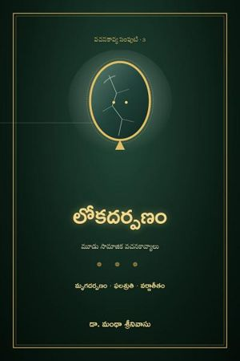
లోకదర్పణంTelugu
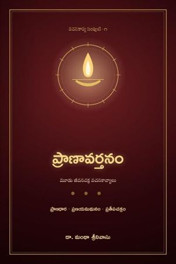
ప్రాణావర్తనంTelugu
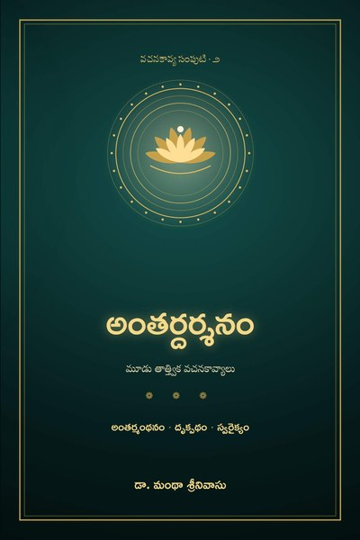
అంతర్దర్శనంTelugu